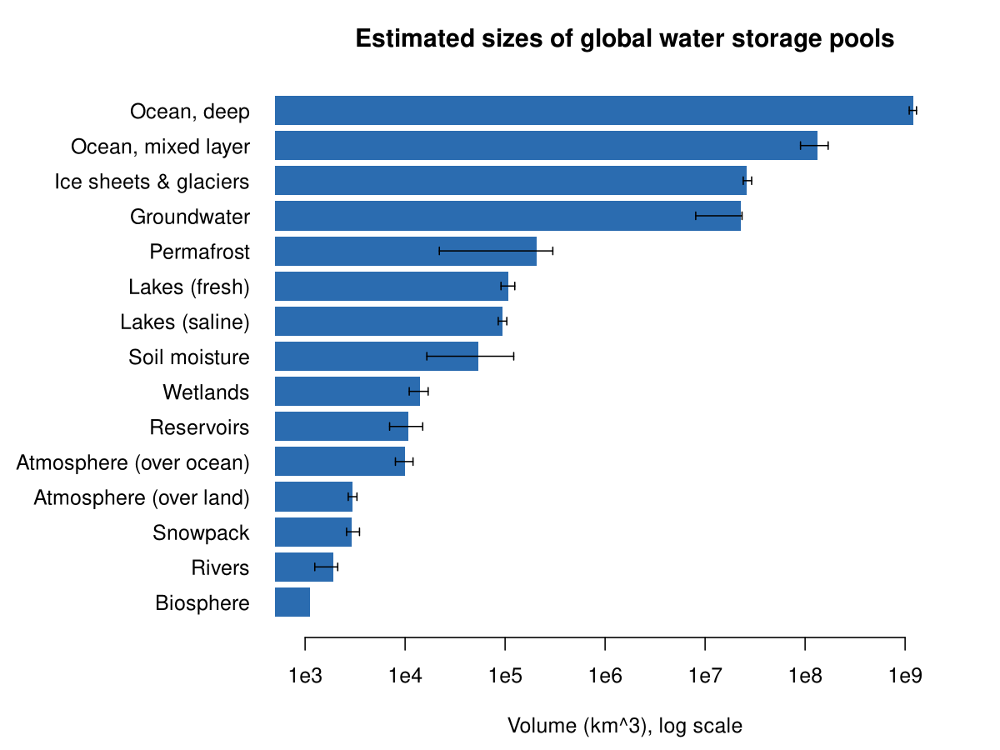
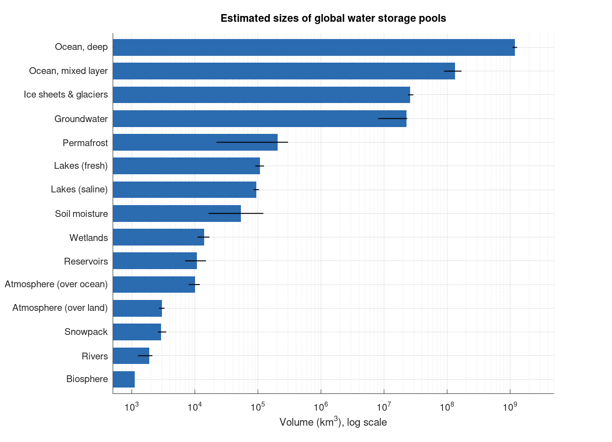

Chapter 1 · Water on Earth
Figure 1.x: Where Earth's water is stored (storage pools)
Global water storage by pool on a log scale.
Source: Chapter 1 draft, Table 1.1 values (volumes in the draft table)
Table 1.1 in the draft contains a typo ("85,4000"); the value used here is stated in the script.
No external data file: values are small and embedded in the code.

Code: storage_pools.py · image: figure_python.png
"""Chapter 1 - Volumes of Earth's water storage pools (Table 1.1 as a log-scale bar chart).
Data: Table 1.1 of the Chapter 1 draft (volume and range of reported values, km^3)."""
import numpy as np
import matplotlib.pyplot as plt
pools = [ # name, volume, low, high (km^3)
("Ocean, deep", 1_206_000_000, 1_100_000_000, 1_300_000_000),
("Ocean, mixed layer", 134_000_000, 90_000_000, 170_000_000),
("Ice sheets & glaciers", 25_800_000, 24_064_000, 29_200_000),
("Groundwater", 22_600_000, 8_060_000, 23_400_000),
("Permafrost", 207_000, 22_000, 300_000),
("Lakes (fresh)", 108_000, 91_000, 125_000),
("Lakes (saline)", 94_700, 85_400, 104_000), # draft table reads "85,4000"; assumed 85,400
("Soil moisture", 54_100, 16_500, 122_000),
("Wetlands", 14_100, 11_000, 17_000),
("Reservoirs", 10_800, 7_000, 15_000),
("Atmosphere (over ocean)", 10_000, 8_000, 12_000),
("Atmosphere (over land)", 3_000, 2_700, 3_300),
("Snowpack", 2_900, 2_600, 3_500),
("Rivers", 1_900, 1_250, 2_120),
("Biosphere", 1_120, None, None),
]
names = [p[0] for p in pools]
vol = np.array([p[1] for p in pools], float)
lo = np.array([p[2] if p[2] else np.nan for p in pools], float)
hi = np.array([p[3] if p[3] else np.nan for p in pools], float)
y = np.arange(len(pools))[::-1]
fig, ax = plt.subplots(figsize=(8, 6))
ax.barh(y, vol, color="#2b6cb0", height=0.7)
ax.errorbar(vol, y, xerr=[vol - lo, hi - vol], fmt="none", ecolor="k", capsize=3, lw=1)
ax.set_xscale("log")
ax.set_xlim(500, 5e9)
ax.set_yticks(y)
ax.set_yticklabels(names)
ax.set_xlabel("Volume (km$^3$), log scale")
ax.set_title("Estimated sizes of global water storage pools")
ax.grid(axis="x", alpha=0.3)
ax.spines[["top", "right"]].set_visible(False)
fig.tight_layout()
fig.savefig("figure_python.png", dpi=150)

Code: storage_pools.R · image: figure_r.png

# Chapter 1 - Volumes of Earth's water storage pools (Table 1.1 as a log-scale bar chart)
# Data: Table 1.1 of the Chapter 1 draft (volume and range of reported values, km^3)
pools <- data.frame(
name = c("Ocean, deep","Ocean, mixed layer","Ice sheets & glaciers","Groundwater","Permafrost",
"Lakes (fresh)","Lakes (saline)","Soil moisture","Wetlands","Reservoirs",
"Atmosphere (over ocean)","Atmosphere (over land)","Snowpack","Rivers","Biosphere"),
vol = c(1206e6,134e6,25.8e6,22.6e6,207e3,108e3,94.7e3,54.1e3,14.1e3,10.8e3,10e3,3e3,2.9e3,1.9e3,1.12e3),
lo = c(1100e6,90e6,24.064e6,8.06e6,22e3,91e3,85.4e3,16.5e3,11e3,7e3,8e3,2.7e3,2.6e3,1.25e3,NA),
hi = c(1300e6,170e6,29.2e6,23.4e6,300e3,125e3,104e3,122e3,17e3,15e3,12e3,3.3e3,3.5e3,2.12e3,NA)
) # saline-lake low value: draft table reads "85,4000"; assumed 85,400
n <- nrow(pools)
png("figure_r.png", width = 1200, height = 900, res = 150)
par(mar = c(4.5, 11, 3, 1))
y <- barplot(rev(pools$vol), horiz = TRUE, log = "x", col = "#2b6cb0", border = NA,
xlim = c(500, 5e9), names.arg = rev(pools$name), las = 1, xaxt = "n",
xlab = "Volume (km^3), log scale", main = "Estimated sizes of global water storage pools")
axis(1, at = 10^(3:9), labels = c("1e3","1e4","1e5","1e6","1e7","1e8","1e9"))
ok <- !is.na(pools$lo)
arrows(rev(pools$lo)[rev(ok)], y[rev(ok)], rev(pools$hi)[rev(ok)], y[rev(ok)],
angle = 90, code = 3, length = 0.03)
dev.off()

Code: storage_pools.m · image: figure_matlab.png

% Chapter 1 - Volumes of Earth's water storage pools (Table 1.1 as a log-scale bar chart)
% Data: Table 1.1 of the Chapter 1 draft (volume and range of reported values, km^3)
names = {'Ocean, deep','Ocean, mixed layer','Ice sheets & glaciers','Groundwater','Permafrost', ...
'Lakes (fresh)','Lakes (saline)','Soil moisture','Wetlands','Reservoirs', ...
'Atmosphere (over ocean)','Atmosphere (over land)','Snowpack','Rivers','Biosphere'};
vol = [1206e6 134e6 25.8e6 22.6e6 207e3 108e3 94.7e3 54.1e3 14.1e3 10.8e3 10e3 3e3 2.9e3 1.9e3 1.12e3];
lo = [1100e6 90e6 24.064e6 8.06e6 22e3 91e3 85.4e3 16.5e3 11e3 7e3 8e3 2.7e3 2.6e3 1.25e3 NaN];
hi = [1300e6 170e6 29.2e6 23.4e6 300e3 125e3 104e3 122e3 17e3 15e3 12e3 3.3e3 3.5e3 2.12e3 NaN];
% (saline-lake low value: draft table reads "85,4000"; assumed 85,400)
n = numel(vol); y = n:-1:1;
fig = figure('Position',[100 100 900 650]);
ax = axes(fig); hold(ax,'on'); set(ax,'XScale','log');
for k = 1:n
patch(ax, [500 vol(k) vol(k) 500], [y(k)-0.35 y(k)-0.35 y(k)+0.35 y(k)+0.35], [0.17 0.42 0.69], 'EdgeColor','none');
end
ok = ~isnan(lo);
for k = find(ok)
plot(ax, [lo(k) hi(k)], [y(k) y(k)], 'k-', 'LineWidth',1);
end
set(ax,'YTick',sort(y),'YTickLabel',fliplr(names),'XLim',[500 5e9],'YLim',[0.4 n+0.6]);
xlabel(ax,'Volume (km^3), log scale'); title(ax,'Estimated sizes of global water storage pools');
grid(ax,'on'); box(ax,'off');
print(fig,'-dpng','-r150','figure_matlab.png');